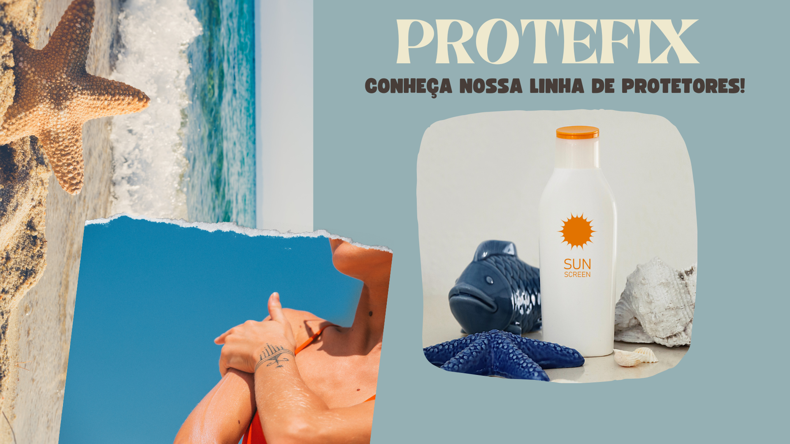

<!doctype html>
<html lang="en">
  <head>
    <meta charset="utf-8">
    <meta name="viewport" content="width=device-width, initial-scale=1">
    <title>Sunflower Self Care</title>
  </head>
  <body>
   
  </body>
</html>
<html lang="pt">

<head>
  <meta charset="utf-8">
  <meta name="viewport" content="width=device-width, initial-scale=1">
  <meta name="keywords"
    content="Sunflower, Maquiagem, Care, Self, Skincare, Protetor Solar, Sabonete, Cuidados com a pele, Shampoo">
  <meta name="description" content="Site de cuidados com a pele">
  <title>Sunflower Self Care</title>
  <link rel="stylesheet" href="home.css">
</head>

<body>

  <nav id="menu-h">
    <ul>
      <li><a href="home.html"></a></li>
      <li><a href="home.html">HOME</li>
      <li><a href="blog.html">BLOG</li>
      <li><a href="home.html">SUSTENTABILIDADE</li>
      <li><a href="home.html">SELF CARE</li>
      <li><a href="cadastro.html">CADASTRE-SE</li>
    </ul>
  </nav>


  <main class="main">
    <section class="galery">
      <div class="fotos">
        
        
        
        


      </div>
    </section>
  </main>

  <br>
  <br>
  <br>

  <form>


    


    


    
    


    


    <footer>
      <div class="footer-icons">
          <a class="items-social-media" href="#">
              <i class="fab fa-facebook-f"></i>
          </a>
          <a class="items-social-media" href="#">
              <i class="fab fa-twitter"></i>
          </a>
          <a class="items-social-media" href="#">
              <i class="fab fa-instagram"></i>
          </a>
          <a class="items-social-media" href="#">
              <i class="fab fa-linkedin-in"></i>
          </a>
          <a class="items-social-media" href="#">
              <i class="fab fa-youtube"></i>
          </a>
      </div>
      <div class="footer-link">
          <strong>Escola SESI-SP de Caçapava - Pq. Residencial Maria Elmira (CE 207)</strong>
          <p>Av. Monsenhor Theodomiro Lobo, 100 - Pq. Residencial Maria Elmira</p>
          <p>(12) 3653-1943</p>
      </div>
  </footer>


</body>

</html>

